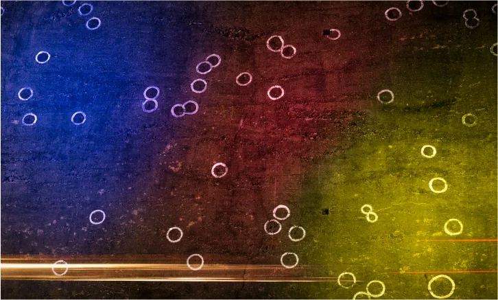
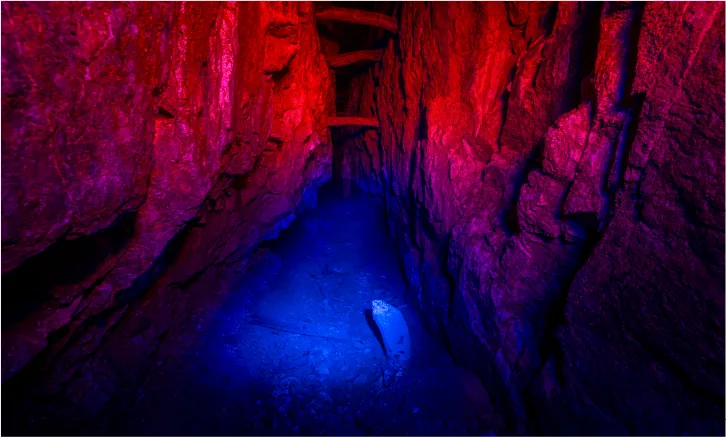
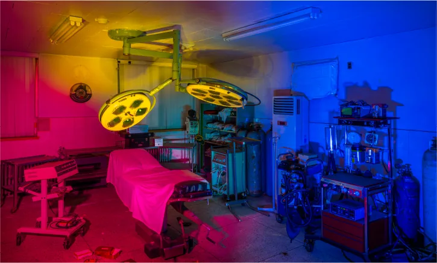
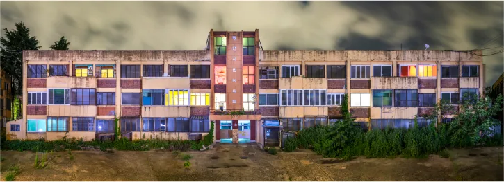
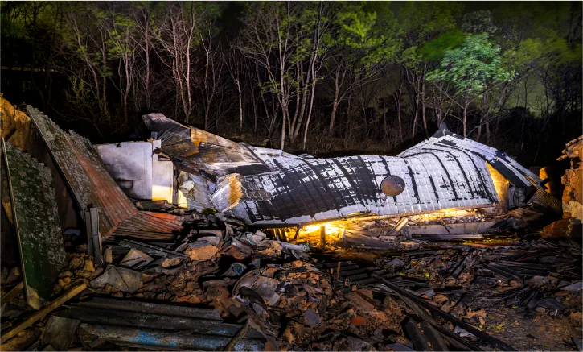
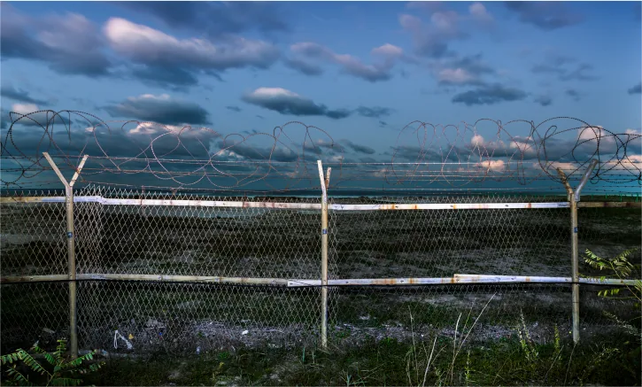
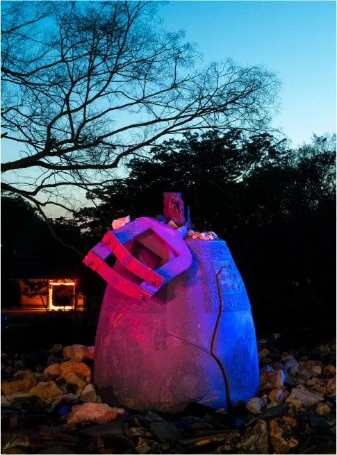

이세현의 사진전 《잔광(殘光)》이 9월 8일에 열렸다. 20일 일요일에 닫으니 여드레 남았다. 장소는 스페이스 이신(SPACE LEESEEN)이다.
빛을 쏘아 찍었다
작가가 카메라를 세운 자리는 여섯 곳이다. 노근리의 콘크리트에 박힌 탄흔, 경산 코발트 광산의 갱도, 광주 적십자병원의 옛 수술실, 광천시민아파트, 동해안의 군사 철책, 의성에서 산불이 지나간 자리. 사건이 끝난 지 짧게는 한 해, 길게는 일흔 해가 넘은 곳들이다.
이세현은 그 위에 붉고 푸른 인공조명을 직접 쏘아 촬영했다. 낮에 가면 콘크리트는 콘크리트이고 갱도는 갱도다. 빛을 얹으면 표면이 달라진다. 총알이 지나간 자국과 그을음이 색을 얻어 다시 떠오른다. 걸린 작품들은 모두 「푸른 낯, 붉은 밤」 연작에 속한다. 「낯」은 얼굴을 뜻한다.


세 갈래로 묶었다
전시는 세 축으로 나뉜다. 첫째 축은 탄흔과 갱도의 어둠이다. 둘째 축은 광주 적십자병원과 광천시민아파트에 남아 있던 사물들이다. 셋째 축은 의성의 잔해와 동해안의 철책이다.


앞의 둘은 오래된 사건이고 마지막 하나는 지난봄에 일어난 일이다. 시간의 간격이 큰 장면들을 한 공간에 걸어 두었다. 서문의 문장은 짧다. "모든 역사는 현재로 통한다."



붉은빛과 푸른빛
이세현은 한국 근현대사의 상흔이 남은 자리를 찾아다니며 이 연작을 이어 왔다. 지난해 광주시립미술관 하정웅미술관에서 열린 광주청년작가초대전 《이세현 : 푸른 낯, 붉은 밤》이 그 중간 결산이었다. 푸르게 질린 얼굴과 어둠 속의 붉은 빛을 맞세운다는 뜻으로 붙인 제목이다. 푸른빛은 상실과 애도를, 붉은빛은 폭력과 저항의 잔재를 가리킨다.
같은 연작에는 국군광주병원과 505보안부대를 찍은 사진도 있다. 색을 먼저 정해 놓고 장소를 골랐을까, 아니면 장소가 색을 불러왔을까? 답은 전시장에서 각자 찾을 몫이다. 두 색이 한 화면에서 만나는 사진이 있다면 거기부터 오래 보기를 권한다.
관람 정보
- 기간 2026년 9월 8일 화요일 ~ 9월 20일 일요일
- 시간 11:00 ~ 18:00
- 장소 스페이스 이신 (SPACE LEESEEN)
- 오프닝 9월 8일 오후 5시 (이미 지났다)
상세 주소와 휴관일은 스페이스 이신의 공지를 확인하는 편이 낫다. 평일 낮에만 문을 열기 때문에, 주말을 노린다면 남은 날은 13일과 14일, 19일과 20일이다.